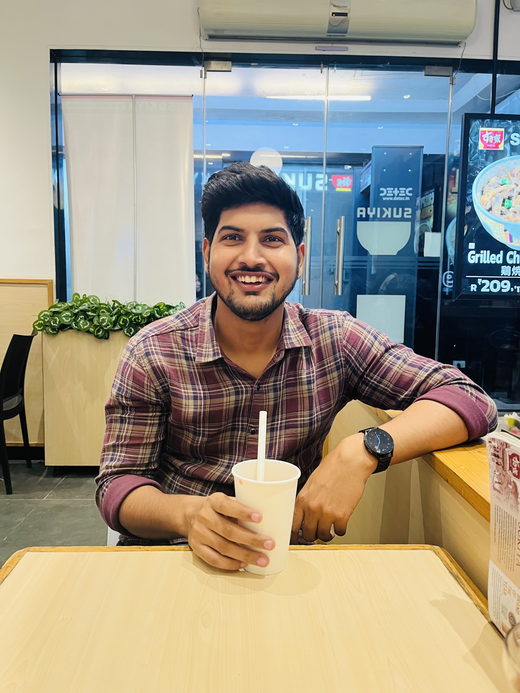

Vishal Sharma
I'm
About

Senior Machine Learning Engineer
Optisol Business Solutions, Coimbatore
I am a Senior Machine Learning Engineer passionate about leveraging Computer Vision technologies to address real-world challenges in various industries, including agriculture and construction. Leading a talented Computer Vision team at Optisol Business Solutions in Coimbatore, I oversee projects from requirement elicitation and R&D to building robust proof of concepts.
With extensive experience in object detection, segmentation, and classification, I utilize state-of-the-art frameworks such as TensorFlow, CUDA, and OpenCV to deliver innovative solutions tailored to client needs. My progression from Full Stack Machine Learning Developer to Team Lead has equipped me with a unique blend of technical expertise and leadership skills, allowing me to mentor teammates and foster collaborative environments that encourage creativity and growth.
Committed to pushing the boundaries of technology, I continuously explore new methodologies and tools to enhance model performance and efficiency. Let's connect to explore how we can leverage the power of AI and Computer Vision to transform industries!
Skills
Technical Skills
- Machine Learning: Supervised & Unsupervised Learning, Feature Engineering, Data Preprocessing, Predictive Analytics
- Deep Learning: Neural Networks, CNNs, RNNs, LSTM
- Computer Vision: Image Processing, Object Detection, Semantic Segmentation, Feature Extraction, Data Augmentation, Annotation
- Programming Languages: C, C++, Python, SQL, Java
- Frameworks & Libraries: MMdetection, TensorFlow, PyTorch, Keras, OpenCV, Pandas, scikit-learn, NumPy, Matplotlib, Seaborn, Tkinter
- Technologies & Tools: Git, Docker, AWS, OpenVino, Intel NUC Edge Device
- Cloud Platforms: AWS, Google Cloud
- Databases: MySQL
External Courses and Certifications
- Applied AI Course by Srikant Verma
Resume
Summary
Vishal Sharma
Innovative and deadline-driven Machine Learning Engineer with 3+ years of experience developing user-centered projects from initial concept to final, polished deliverable.
Education
Bachelor of Technologies & Computer Science
2017 - 2021
Jamia Hamdard, New Delhi
Bachelor of Education
2021 - 2023
MSU, Saharanpur
Professional Experience
Senior Machine Learning Engineer
2022 - Present
Optisol Business Solutions, Coimbatore
- Leading the Computer Vision team. Undertaking responsibilities like Requirement elicitation, R&D, building Proof of Concepts etc
- Providing solutions using Computer Vision for various use cases, mainly in the industrial fields such as Agriculture, Construction, etc.
- Training models for detection, segmentation, classification with the help of state-of-the-art implementations
Machine Learning Engineer
2021 - 2022
Optisol Business Solutions, Coimbatore
- A Full Stack Machine Learning Developer worked on Object Detection, Instance and Semantic Segmentation, object dimensions calculation.Experience in CUDA, TensorFlow, Flask and Docker frameworks.
- Promoted as a Team Lead, managed client interactions, requirement elicitation and mentored fellow teammates.
- Providing vision solutions in the industrial sector using models like YOLO, SSD, and Image Processing techniques using OpenCV.
Projects
Utility Pole Project
Role: Project Lead
Description:
Spearheaded a team of 12 engineers in delivering a comprehensive Utility Pole Inspection system using instance segmentation techniques. The project leveraged MMDetection and OpenCV to identify and analyze utility pole components in images.
Designed a custom 3D pole dataset and developed a robust JSON parser for structured data handling. Key features included automated pole height estimation, super-resolution image enhancement, and synthetic blocky node generation for training augmentation.
Engineered scalable Python modules using Object-Oriented Programming to ensure maintainability and seamless system integration. Maintained consistent client communication, managed delivery milestones, and ensured successful execution within the defined timeline.
Technologies Used:
MMDetection, OpenCV, Python, JSON
Key Achievements:
- Delivered a high-precision pole detection system aligned with client requirements and deadlines.
- Improved team productivity through structured planning, code reviews, and agile collaboration.
- Introduced innovative techniques that enhanced the accuracy and speed of instance segmentation and feature extraction.
Gesture-Controlled TV Using Finger Gestures
Description:
Led the development of a hands-free TV control system using MediaPipe for real-time hand and finger gesture tracking. Users could interact with TV functions such as power, volume, channel switching, and media playback through intuitive gestures.
Key Features:
- Gesture Recognition: Detected gestures like swipe and pinch for controlling TV functions.
- Control Mechanisms: Enabled power toggle, volume adjustment, channel change, and media control via gestures.
- UI Interface: Visual feedback system displayed TV status like volume level on the screen.
- Real-time Processing: MediaPipe ensured immediate response to gesture inputs.
Technologies Used:
MediaPipe, OpenCV, Python, PyAutoGUI, VLC Python
Achievements:
- Created an intuitive, touch-free alternative to traditional TV remotes.
- Enhanced accessibility and user experience through gesture-based interaction.
Forklift Safety
Description:
Managed critical production issues to improve forklift safety by refining ML models and frameworks. Implemented advanced data encryption and MAC-level security to protect model integrity. Developed and integrated image processing modules with secure online storage.
Technologies Used:
OpenVINO, Data Encryption, Dropbox
Achievements:
- Resolved real-time production issues, minimizing downtime and boosting safety.
- Enhanced machine learning models for better operational performance.
- Implemented robust security protocols for secure data processing and storage.
Cogo Insurance – Driver Behavior Scoring
Description:
Developed a Usage-Based Insurance (UBI) system to evaluate driving behavior and determine insurance premiums accordingly. Worked with telematics data from trucks and heavy vehicles, extracting behavioral insights and deploying predictive ML models.
Features were engineered from raw data including hard braking, acceleration, and cornering. Additional context was provided through weather APIs to factor in hazardous conditions. Machine learning models were used to predict accident probability and detect anomalies.
Automated data processing pipelines using AWS Glue and stored driver scores in AWS RDS. A FastAPI service was created to allow quick driver score lookups.
Technologies Used:
AWS Glue, AWS Databricks, AWS RDS, AWS S3, FastAPI, WeatherAPI
Achievements:
- Built a driver scoring system that incorporated both behavioral and environmental factors.
- Deployed accident prediction models using boosting-based techniques.
- Integrated anomaly detection to flag abnormal vehicle behavior.
- Processed data for over 20,000 drivers daily via scalable AWS pipelines.
- Enabled real-time score retrieval via a FastAPI endpoint connected to AWS RDS.
Contact
Address
Noida, India
Call
+91 9634669943
visinfo8@gmail.com